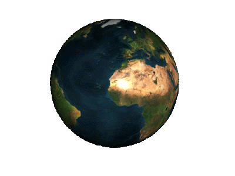
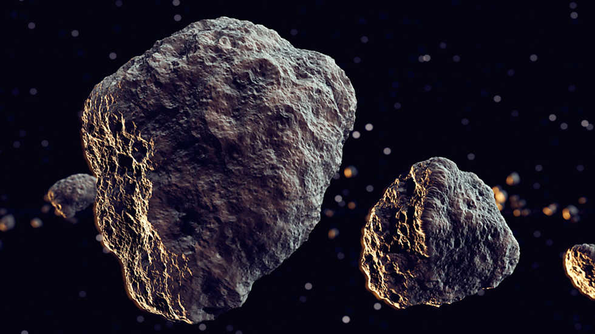
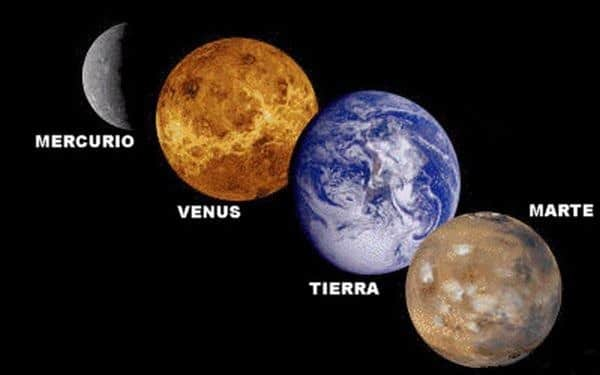

El Sistema Solar
¿Qué es el Sistema Solar?
El sistema solar es el conjunto formado por el Sol y los ochos planetas con sus respectivos satélites que giran a su alrededor, también le acompañan en su desplazamiento por la galaxia o Vía Láctea planetas enanos, asteroides e innumerables cometas, meteoritos y corpúsculos interplanetarios. Este sistema está situado a unos 33.000 años luz del centro de la Vía Láctea.
Son muchas las hipótesis sobre el origen del Sistema Solar, las teorías más actuales enlazan su formación con la del Sol, hace unos 4.700 millones de años. A partir de una nube interestelar de gas y de polvo que se fragmentó o colapsó, conduciendo a la formación de una nebulosa solar primordial, y por medio de la unión de partículas cada vez mas grandes la formación de los planetas actuales.
Hasta el 24 de agosto de 2006 los planetas del Sistema Solar eran nueve: Mercurio, Venus, Tierra, Marte, Júpiter, Saturno, Urano, Neptuno y Plutón. En dicha fecha, la Unión Astronómica Internacional creó una nueva clase de planeta: los planetas enanos, en donde Plutón pasó a ser parte de ellos, junto con Ceres y Eris; y más adelante, se les ha unido Haumea y Makemake.

Los planetas son cuerpos que se desplazan en órbitas elípticas alrededor del Sol (traslación) y en torno a sí mismos (rotación). Por lo general, la distancia de cada planeta al Sol viene ser el doble de la anterior. Los planetas, con excepción de Mercurio y Venus, poseen satélites, cuerpos de menor tamaño que giran a su alrededor. El satélite más conocido es el de la Tierra, la Luna.
Los planetas más próximos al Sol son llamados planetas interiores o telúricos (Mercurio, Venus, Tierra y Marte), son de reducida dimensión, de elevada densidad, escasa velocidad de rotación y presenta pocos satélites; los planetas lejanos son conocidos como planetas exteriores o gigantes (Júpiter, Saturno, Urano y Neptuno), son de gran tamaño, de baja densidad, de rotación rápida y tienen consistencia gaseosa y mayor número de satélites.
Júpiter es el planeta con mayor tamaño, mientras que Mercurio es el más pequeño, Venus en cuanto a masa y tamaño tiene características análogas a la Tierra, y Marte conocido como el planeta rojo es la mitad de masa.
Aparte de estos planetas principales y sus satélites, existen miles de cuerpos pequeños conocidos como asteroides, los cuales están situados entre las órbitas de Marte y Júpiter, en una franja llamada el cinturón de asteroides. Además no podemos olvidar a los cometas (bolas de hielo y polvo) y los meteoritos.

Asteroides

Cinturón de asteroides
Como ya sabemos, existen ocho planetas principales en el sistema solar, los cuales estan divididos en dos grupos:
Planetas interiores, los más próximos al sol y los más pequeños: Mercurio, Venus, La Tierra y Marte. También se les llama planetas terrestres o telúricos, pues poseen superficie sólida, concreta, alrededor de la cual hay una atmósfera (excepto en el caso de Mercurio).

Planetas exteriores, que están después del cinturón de asteroides en el medio del sistema planetario, gigantescos y básicamente gaseosos:Júpiter, Saturno, Neptuno y Urano. Los últimos dos se conocen como los gigantes helados.
Existen también un conjunto de planetas enanos, entre los que se incluyó a Plutón desde 2006: Ceres, Makemake, Eris y Haumea. Tienen suficiente masa para adquirir forma esférica, pero no para atraer o repeler los objetos alrededor, por lo que se consideran a un nivel intermedio entre planetas y asteroides.
Estudios recientes señalan que podría existir un noveno planeta, llamado provisionalmente Phattie, pero aún no se ha confirmado nada al respecto.
Regresar
.jpg)